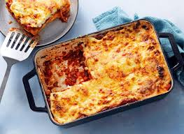

Lasagna Recipe

Description
Lasagna is a quintessential comfort dish, embodying the rich layers and heartwarming
flavors of Italian culinary tradition. It layers tender pasta sheets with savory meat
sauce, creamy bechamel or ricotta, and melted cheeses, baked until golden and bubbly.
This harmonious blend of textures and tastes creates a satisfying and indulgent experience.
The dish is more than a feast for the palate; it's a celebration of tradition and shared meals.
Lasagna symbolizes the coming together of family and friends, making it a favorite for gatherings.
It stands as a testament to the essence of comfort food, offering warmth and contentment with every bite.
Ingredients
- Lasagna noodles
- Ground beef or Italian sausage
- Onion, finely chopped
- Garlic cloves, minced
- Tomato sauce
- Ricotta cheese
- Mozzarella cheese, shredded
- Parmesan cheese, grated
- Egg
- Fresh or dried basil
- Fresh or dried oregano
- Salt and pepper
How to make it:
- Preheat Oven: Start by preheating your oven at 375°F (190°C).
- Cook the Meat: In a large skillet, cook the ground beef or Italian sausage over medium
heat until browned. Add chopped onion and minced garlic, cooking until soft. Drain any excess fat.
- Add Tomato Sauce: Stir in the tomato sauce, basil, oregano, salt and pepper into the
meat mixture. Simmer for about 10 minutes.
- Prepare Ricotta Mixture: In a bowl, mix ricotta cheese with an egg. adding a pinch
of salt and pepper.
- Boil Lasagna Noodles: Cook the lasagna noodles according to package instructions
until al dente. Drain and set aside.
- Layer the Lasagna: In a baking dish with, start spreading a layer of the meat sauce.
Place a layer of lasagna noodles over the sauce, then spread a layer of the ricotta mixture. Sprinkle mozzarella
and Parmesan cheese on top. Repeat the layers until all ingredients are used, finishing with a layer of cheese.
- Bake: Cover the baking dish with foil and bake for 25 minutes. Remove the foil and bake for
an additional25 minutes, or until the cheese is golden and bubbly.
- Rest Before Serving: Let the lasagna rest for about 10 minutes before slicing. This allows
the layers to set and makes it easier to serve.